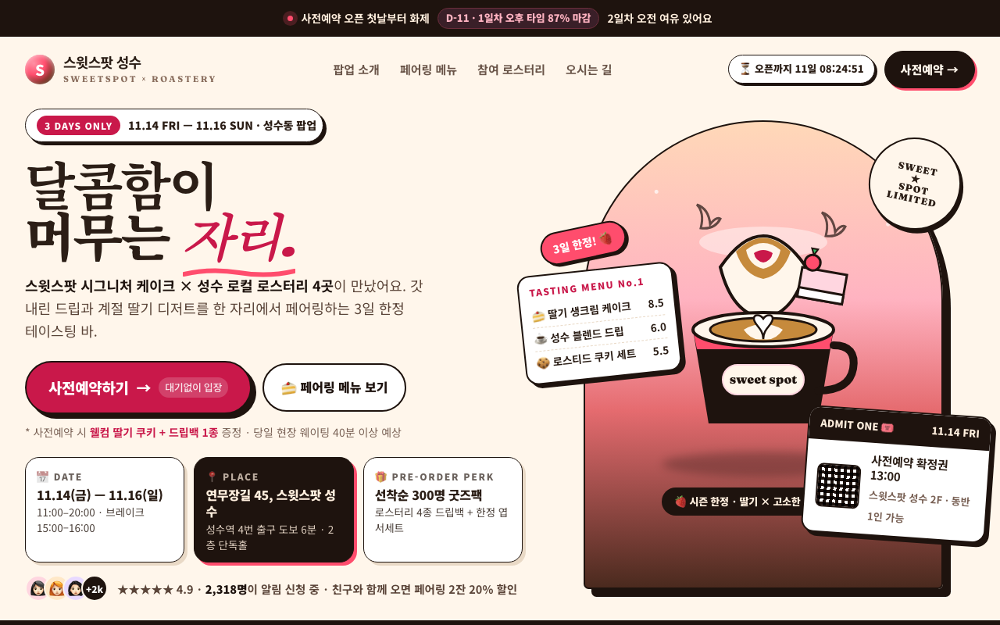
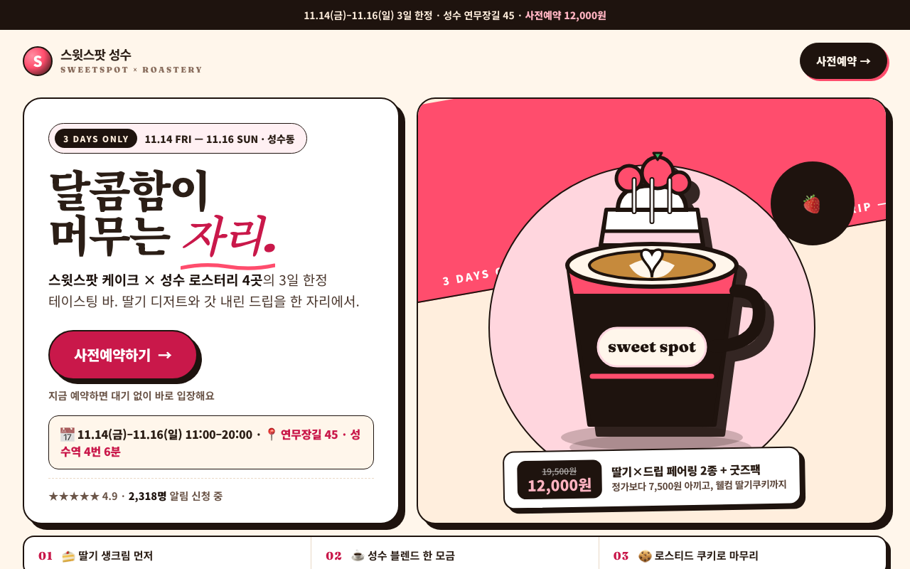

| issue | opened | resolved | attempts | tried |
|---|---|---|---|---|
| 물체 형태(LO)·움직임(MT) 반응이 낮음: 뚜렷한 사물 실루엣이 없는 텍스트 위주 화면 | r0 | open | 4 | r3: 사선밴드·회전뱃지·스팀 삭제하고 520px 단일 컵을 하단 밖으로 흘러넘치게 확대, 뒤에 540px 솔리드 핑크 원 하나+대각선 궤적 비행딸기 3개로 단일 오브젝 / r4: 사선밴드·원형후광·회전뱃지·막대스팀 삭제하고 단일 아치 도어+8도 기울인 480px 컵 블리딩+대각선 바닥그림자로 단일 오브젝트와 대각모션으로 교체 |
| 장소 영역(PPA)이 우세: 배경 풍경이 화면을 지배해 내용이 묻힘 | r0 | open | 4 | r3: 스테이지 장식(티커사선·이중후광·캡션) 전부 제거해 크림 단색+단일 원으로 정리하고 컵이 프레임을 소유하도록 하단 블리딩·단일 드롭섀도우로 고정 / r4: 좌우 경쟁카드 2개를 단일 히어로 패널 하나로 통합, 카피는 보더없는 솔리드 위에 배치하고 아치+컵이 프레임 소유 |
| 보상 회로(OFC/vmPFC)는 켜졌는데 끌림 헤드는 평범: 가치 신호가 있지만 무엇이 좋은지 읽히지 않음 | r0 | open | 4 | r3: 컵 손잡이에 끈으로 매단 가격택 하나로 혜택 통합: 사전예약가 12,000원·정상가 취소선·7,500원+쿠키 한 줄 명시, 주변 경쟁요소 제거 |
| 주의 반응이 첫 2초 이후 꺼짐 (+0.53 → +0.37): 첫인상 뒤에 볼 게 없음 | r0 | r1 | 1 | |
| 주의 반응이 첫 2초 이후 꺼짐 (+0.60 → +0.41): 첫인상 뒤에 볼 게 없음 | r2 | open | 2 | r3: 2.4초 후 슬라이드인 선착순 기프트 토스트+호버시 속맛이 열리는 테이스팅 티켓 3종으로 두 번째 발견 추가 |
| r | ui | 뇌 | 심사위원 | kept | changes | sourced photos |
|---|---|---|---|---|---|---|
| r0 | 0.583 | 0.482 | 0.69 | ✓ | ||
| r1 | 0.623 | 0.431 | 0.81 | ✓ | 작은 컵 일러스트+4개 스티커를 걷어내고 400px급 단일 컵+케이크 실루엣으로 확대, 뒤에 사선 리본·스팀·스피드선 애니메이션으로 움직임 부여; 그라데이션 아치 풍경 삭제, 카피를 솔리드 화이트 패널에 올리고 비주얼은 크림 단색 스테이지+후광원 하나로 정리해 주체가 프레임을 소유; 시선이 닿는 컵 옆에 가격·혜택을 명시한 프라이스택 추가: 사전예약 12,000원(정가19,500원)+웰컴쿠키·드립백, 경쟁 카피 삭제 | |
| r2 | 0.660 | 0.539 | 0.81 | ✓ | 작은 스피드선·후광 대신 화면을 가로지르는 핑크 사선 밴드+대형 컵 플로팅 애니메이션+회전 뱃지로 단일 오브젝트와 대각선 모션 강화; 스테이지 상단 블랙 티커바·이중 후광·캡션·티커 삭제, 크림 단색+사선 하나로 정리하고 컵을 프레임 하단까지 흘러넘치게 확대해 주체가 프레임 소; 중복 혜택박스(value-line+price-tag+팁) 삭제 후 컵 바로 아래 단일 오퍼바(12,000원·페어링2종+굿즈팩) 하나로 통합, 듀 | |
| r3 | 0.628 | 0.516 | 0.75 | · | 사선밴드·회전뱃지·스팀 삭제하고 520px 단일 컵을 하단 밖으로 흘러넘치게 확대, 뒤에 540px 솔리드 핑크 원 하나+대각선 궤적 비행딸기 ; 스테이지 장식(티커사선·이중후광·캡션) 전부 제거해 크림 단색+단일 원으로 정리하고 컵이 프레임을 소유하도록 하단 블리딩·단일 드롭섀도우로 고정; 컵 손잡이에 끈으로 매단 가격택 하나로 혜택 통합: 사전예약가 12,000원·정상가 취소선·7,500원+쿠키 한 줄 명시, 주변 경쟁요소 제거 | |
| r4 | 0.637 | 0.511 | 0.78 | · | 사선밴드·원형후광·회전뱃지·막대스팀 삭제하고 단일 아치 도어+8도 기울인 480px 컵 블리딩+대각선 바닥그림자로 단일 오브젝트와 대각모션으로 ; 좌우 경쟁카드 2개를 단일 히어로 패널 하나로 통합, 카피는 보더없는 솔리드 위에 배치하고 아치+컵이 프레임 소유; 탑바·본문 중복가격 제거하고 컵 하단에 겹친 블랙 프라이스필 하나로 혜택 통합: 12,000원·취소선·쿠키 한줄 |